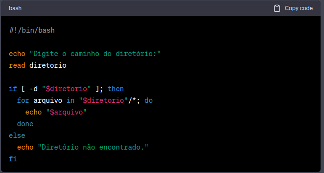

Exemplos de código
Exemplo1: Calculadora Simples
Este é um script que pede ao usuário para inserir dois números e realiza operações matemáticas simples.
#!/bin/bash
echo "Calculadora Simples"
echo "Digite o primeiro número:"
read num1
echo "Digite o segundo número:"
read num2
echo "Escolha a operação:"
echo "1. Adição"
echo "2. Subtração"
echo "3. Multiplicação"
echo "4. Divisão"
read operacao
case $operacao in
1)
resultado=$((num1 + num2))
;;
2)
resultado=$((num1 - num2))
;;
3)
resultado=$((num1 * num2))
;;
4)
resultado=$(echo "scale=2; $num1 / $num2" | bc)
;;
*)
echo "Opção inválida"
exit 1
;;
esac
echo "Resultado: $resultado"
Exemplos de código
Exemplo2: Listando Diretórios
Este script lista todos os arquivos em um diretório especificado:

Este é apenas um exemplo básico. Shell Script é uma linguagem poderosa para automação de tarefas e gerenciamento de sistemas Unix-like.
Você pode aprender mais sobre Shell Script estudando a sintaxe, explorando exemplos e experimentando diferentes comandos e estruturas.